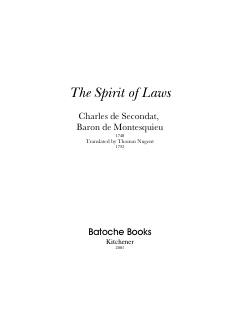

TSSiyosiy va huquqiy tizimlar hamda qonunlarning kelib chiqishini o'rganuvchi mumtoz asar.
Ushbu asar qonunlar, davlat tuzilmalari, siyosiy erkinlik va jamiyatning turli omillar bilan o'zaro bog'liqligini o'rganuvchi mumtoz huquqiy-siyosiy traktatdir. Muallif turli xil hukumat shakllari, iqlim, din va savdo-sotiqning qonunchilikka ta'sirini atroflicha tahlil qilgan.